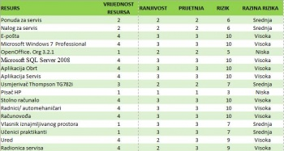
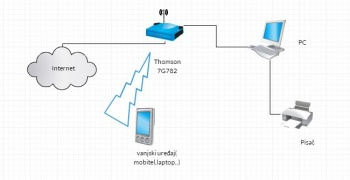
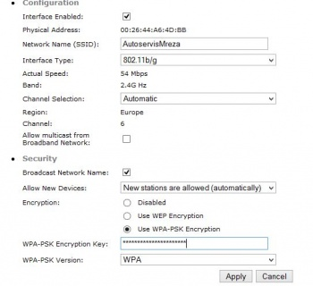
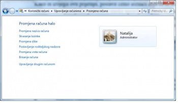
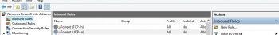
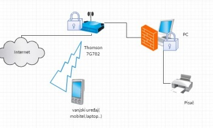

ISO 27001:2013 i ISO 27002:2013 - Implementacija u poduzeću
Tim: Natalija Krsnik, Nikola Miljančić, Kristian Stančin
Sadržaj |
Uvod
ISO 27000 serija međunarodnih standarda posebno je namijenjena za potrebe informacijske sigurnosti.
U ovu seriju standarda spada i ISO 27001 - standard koji opisuje kako upravljati informacijskom sigurnošću u tvrtkama, te isti može biti implementiran u bilo kojoj organizaciji.
ISO 27002 također je međunarodni standard koji sadrži preporuke za kontrolne mehanizme za informacijsku sigurnost.
U ovome radu opisat ćemo oba standarda, navesti dokumente potrebne za implementaciju ISO 27001:2013 u poduzeće, te ćemo sve pokazati na praktičnom primjeru iz stvarnog života.
ISO 27001
Međunarodni standard ISO 27001 objavila je Međunarodna Organizacija za Standardizaciju (ISO).
Ovaj standard opisuje kako upravljati informacijskom sigurnošću u nekoj tvrtki.
Prva verzija ovoga standarda, a razvijena na temelju britanskog standarda BS 7799 objavljena je 2005. godine. Druga verzija objavljena je 2013. godine pod nazivom ISO/IEC 27001:2013.
Ovaj standard napisan od najboljih svjetskih stručnjaka informacijske sigurnosti može biti implementiran u bilo kojoj organizaciji. ISO/IEC 27001 propisuje tehnologiju za primjenu upravljanja informacijskom sigurnošću u organizaciji.
Tvrtke mogu dobiti certifikat što znači da je ista uspješno implementirala informacijsku sigurnost.
Tablica 1.1. ISO 27001 (2013): Promijene u odnosu na prethodnu verzije (2005)
| ISO/ IEC 27001 (2005) | ISO/IEC 27001 (2013) | |
|---|---|---|
| Broj odsječaka u Aneksu A | 11 | 14 |
| Broj kontrola u Aneksu A | 133 | 114 – dodano 11 novih kontrola |
| Promjena izraza | Vlasnik imovine Dionici |
Vlasnik rizika Zainteresirane stranke |
| Sposobnost mjerenja sustava upravljanja sigurnošću informacija (ISMS) | Slabi fokus | Bolji fokus u odnosu na prošlu verziju norme |
| Količina dokumenata | Mnogo | Izostavljen velik broj dokumenata iz prethodne verzije norme |
| Komunikacija | Izričito se zahtijeva | |
| Standard se odnosi na PDCA metodologiju | Da | Ne više |
Tablica 1.2. Razlike između aneksa A ISO 27001: 2013 i ISO 27001:2005.
| ISO 27001 ( 2013) – ANEKS A KONTROLNI CILJEVI I KONTROLE | ISO 27001 ( 2005) – ANEKS A
KONTROLNI CILJEVI I KONTROLE |
|---|---|
| A.5 Politika informacijske sigurnosti | A.5 Sigurnosna politika |
| A.6 Organizacija informacijske sigurnosti | A.6 Organizacija informacijske sigurnosti |
| A.7 Sigurnost ljudskih resursa | A.7 Upravljanje imovinom |
| A.8 Upravljanje imovinom | A.8 Sigurnost ljudskih resursa |
| A.9 Kontrola pristupa | A.9 Fizička sigurnost i sigurnost okoliša |
| A.10 Kriptografija | A.10 Upravljanje komunikacijom i poslovanjem |
| A.11 Fizička sigurnost i sigurnost okoliša | A.11 Kontrola pristupa |
| A.12 Operacijska sigurnost | A.12 Stjecanje, razvoj i održavanje sustava |
| A.13 Komunikacijska sigurnost | A.13 Upravljanje incidentima informacijske sigurnosti |
| A.14 Stjecanje, razvoj i održavanje sustava | A.14 upravljanje kontinuitetom poslovanja |
| A.15 Odnos s dobavljačima | A.15 Popustljivost |
| A.16 Upravljanje incidentima informacijske sigurnosti | ISO 27001(2005) sadrži aneks B (OECD načela) i aneks C (Korespondencija između ISO 9001:2000, ISO 14001:2004 i ovog standarda). |
| A.17 Aspekti informacijske sigurnosti o upravljanju kontinuitetom poslovanja | |
| A.18 Popustljivost |
Zašto usvojiti standard informacijske sigurnosti?
Organizacije iz mnogo razloga biraju implementaciju sustava upravljanja informacijskom sigurnošću u svoje poduzeće. Razlozi se uglavnom mogu podijeliti u dvije kategorije:
- Osiguranje tržišta→ odnosi se na sposobnost sustava upravljana informacijskom sigurnošću da pruži povjerenje unutar tržišta, sposobnost (mogućnost) organizacije da brine o sigurnosti podataka. Podizanje povjerenje u organizaciju za koju korisnici smatraju da će zadržati povjerljivost, integriteti i dostupnost njihovih informacija.
- Upravljanje→ odnosi se na to kako organizacija upravlja. U tom slučaju, sustav upravljanja informacijskom sigurnošću prepoznat je kao proaktivan način upravljanja informacijskom sigurnošću.
Ključne poslovne prednosti za organizaciju koja posjeduje i primjenjuje ISO/IEC 27001 standard:
- Ostvarivanje marketinške prednosti → klijenti brinu o svojim osobnim podacima. Ukoliko organizacija, u odnosu na konkurenciju, posjeduje certifikat, biti će u većoj prednosti u očima klijenata.
- Zadovoljavanje pravnih zahtjeva→ većina zakona vezana uz sigurnost informacija riješena je primjenom ISO 27001.
- Niži troškovi→ koji nastaju sprječavanjem incidenata.
- Bolja organizacija→ primjenom standarda ISO 27001, organizacija je dužna popisati osnovne procese organizacije.
{kind=link}
ISO/IEC 27001:2013
ISO 27001 Informacijske tehnologije – sigurnosne tehnologije – sustavi za upravljanje informacijskom sigurnošću – zahtjevi
ISO (Internacionalna organizacija za standardizaciju) i IEC (Internacionalna elektrotehnička komisija) formiraju specijalizirani sustav za svjetsku standardizaciju. Nacionalna tijela koja su članovi ISO ili IEC sudjeluju u razvoju međunarodnih standarda kroz tehnički odbor utvrđen od odgovarajuće organizacije za rješavanje pojedinih područja tehničkih djelatnosti.
ISO i IEC tehnički odbori surađuju u područjima od zajedničkog interesa. Glavni zadatak Zajedničkog tehničkog odbora je priprema međunarodnih standarda. Nacrti međunarodnih standarda usvojeni od Zajedničkog tehničkog odbora cirkuliraju do nacionalnih tijela u svrhu glasovanja. Objava istih nacrta kao međunarodnih normi zahtijeva najmanje 75% glasova nacionalnih tijela.
ISO/IEC 27001 pripremio je Zajednički tehnički odbor ISO/IEC JTC 1, Informacijske tehnologije, Pododbor SC 27, IT sigurnosne tehnike.
Ovo drugo izdanje poništava i zamjenjuje prvo izdanje ISO/IEC 27001:2005 koje je tehnički revidirano.
UVOD
OPĆENITO
Ovaj međunarodni standard spremljen je kako bi pružao uvjete za uspostavu, implementaciju, održavanje i kontinuirano poboljšavanje sustava upravljanja informacijskom sigurnošću.
Za neku organizaciju usvajanje sustava upravljanja informacijskom sigurnošću predstavlja stratešku odluku. Na uspostavljanje i implementaciju sustava za upravljanje informacijskom sigurnošću određene organizacije utječu potrebe i ciljevi organizacije, sigurnosni uvjeti, organizacijski procesi koji se koriste te struktura i veličina organizacije. Očekuje se da će se svi ovi faktori mijenjati tijekom vremena.
Sustav upravljanja informatičkom sigurnošću čuva integritet, dostupnost i povjerljivost informacija primjenom procesa upravljanja rizicima te daje povjerenje zainteresiranim stranama da se rizicima adekvatno upravlja.
Važno je da je sustav upravljanja informacijskom sigurnošću integriran i dio procesa organizacije i cjelokupne upravljačke strukture, te također da informacijska sigurnost bude razmatrana u dizajnu procesa, informacijskog sustava i kontrola. Očekuje se da će implementacija sustava upravljanja informacijskom sigurnošću biti provedena u skladu s potrebama organizacije.
Ova međunarodna norma može biti korištena od internih i eksternih zainteresiranih strana za procjenu organizacijske sposobnost za zadovoljavanje vlastitih zahtjeva informacijske sigurnosti.
ISO/IEC 27000 opisuje pregled i vokabular sustava za upravljanje informacijske sigurnosti, referencirajući se na obitelj standarda sustava upravljanja informacijske sigurnosti ( uključujući ISO/IEC 27003, ISO/IEC 27004 i ISO/IEC 27005).
INFORMACIJSKA TEHNOLOGIJA – SIGURNOSNA TEHNOLOGIJA – SUSTAV UPRAVLJANJA INFORMACIJSKOM SIGURNOŠĆU – ZAHTJEVI
- OPSEG
Ova međunarodna norma određuje zahtjeve za uspostavljanje, implementaciju, održavanje i kontinuirano poboljšavanje sustava upravljanja informacijskom sigurnošću unutar konteksta organizacije. Ova međunarodna norma uključuje i zahtjeve za procjenu i tretiranje rizika informacijske sigurnosti prilagođene zahtjevima organizacije. Zahtjevi izloženi u ovom međunarodnom standardu generički su i namijenjeni da budu primjenjivi na sve organizacije, neovisno o tipu, veličini ili prirodi organizacije. - UPUĆIVANJE NA DRUGE NORME
Upućuje na ISO/IEC 27000 kao standard u kojem su navedene definicije i pojmovi. - POJMOVI I DEFINICIJE
Upućuju na normu ISO/UEC 27000. - KONTEKST ORGANIZACIJE
- 4.1) Razumijevanje organizacije i njenog konteksta
Organizacija mora utvrditi vanjske i unutarnje probleme koji su relevantni za njenu svrhu i koji utječu na njenu sposobnost ostvarivanje namjeravanog ishoda svoj sustava upravljanja informacijskom sigurnošću. - 4.2) Kontekst organizacije.
Razumijevanje potreba i očekivanja zainteresiranih stran Organizacija mora utvrditi:- Zainteresirane stranke koje su relevantne za sustav upravljanja informacijskom sigurnošću
- Zahtjeve zainteresiranih stranaka relevantne za informacijsku sigurnost.
Zahtjevi zainteresiranih strana mogu uključivati pravne i regulatorne zahtjeve i ugovorne obveze.
- 4.1) Razumijevanje organizacije i njenog konteksta
Organizacija mora odrediti granice i primjenjivost sustava za upravljanje informacijskom sigurnošću za uspostavu djelokruga.
Prilikom utvrđivanja opsega, organizacija mora u obzir uzeti:
- Vanjske i unutarnje probleme iz točke 2.1
- Zahtjeve iz točke 2.2
- Sučelja i zavisnosti između aktivnost koje obavlja organizacija i sučelja i zavisnosti koje obavljaju neke druge organizacije.
Organizacija mora uspostaviti, implementirati, održavati i kontinuirano poboljšavati Sustav za upravljanje informacijskom sigurnošću u skladu sa zahtjevima ove međunarodne norme.
- 5.1) rukovođenje i predanost
Vrhovni menadžment će demonstrirati rukovođenje i predanost prema sustavu za upravljanje informacijskom sigurnošću:- Osiguranjem sigurnosne politike informacije. Ciljevi informacijske sigurnosti biti će uspostavljeni i u skladu sa strateškim smjerom organizacije
- Osiguravanjem integracije zahtjeva sustava upravljanja sigurnošću informacija u procese organizacije
- Osiguranjem dostupnosti resursa potrebnih za sustav upravljanja sigurnošću informacija
- Isticanjem važnosti učinkovitog upravljanja informacijskom sigurnošću i usklađivanjem sa zahtjevima sustava za upravljanje sigurnošću informacija
- Osiguranjem da sustav upravljanja informacijskom sigurnošću postiže namjeravani ishod
- Usmjeravanjem i podržavanjem osoba koje će doprinosu učinkovitosti sustava za upravljanje sigurnošću informacija
- Promicanjem stalnog poboljšanja
- Podržavanjem drugih uloga relevantnih za upravljanje da pokažu svoje vodstvo koje se odnosi na njihovo područje sigurnosti.
- 5.2) POLITIKE
Vrhovni menadžment će uspostaviti politiku informacijske sigurnosti koja:- je primjerena svrsi organizacije
- uključuje ciljeve informacijske sigurnost ili pruža radni okvir za postavljanje ciljeva informacijske sigurnosti.
- sadrži obvezu da zadovolji primjenjive zahtjeve koji se odnose na informacijsku sigurnost
- sadrži obvezu za kontinuirano poboljšanje sustava za upravljanje informacijske sigurnost
- će biti dostupna kad dokumentirana informacija
- će biti priopćena unutar organizacije
- će biti dostupna zainteresiranim stranama.
- 5.3) ORGANIZACIJSKE ULOGE, ODGOVORNOSTI I OVLASTI
Vrhovni menadžment mora osigurati da su dodijeljene i priopćene odgovornosti i ovlasti za uloge relevantne za informacijsku sigurnost. Vrhovni menadžment mora dodijeliti odgovornosti i ovlasti za:- osiguravanje da je sustav upravljanja informacijskom sigurnošću u skladu sa zahtjevima ovog međunarodnog standard
- izvješćivanje o izvedbi sustava upravljanja sigurnošću informacija vrhovnom menadžmentu.
6. PLANIRANJE
- 6.1) MJERE ZA RJEŠAVANJE RIZIKA I MOGUĆNOSTI
- 6.1.1) OPĆENITO
Kada planira za sustav upravljanja informacijskom sigurnošću, organizacija mora razmotriti pitanja iz točke 4.1 i zahtjeve iz točke 4.2 i odrediti rizike i mogućnosti koje treba riješiti:- kako bi sustav upravljanja informacijskom sigurnošću mogao postići namjeravani ishod
- kako bi se spriječilo ili smanjilo neželjene učinke
- kako bi se postiglo stalno poboljšanje.
- mjere za rješavanje tih rizika i mogućnosti
- kako:
- integrirati i implementirati aktivnosti u procese sustava upravljanja informacijskom sigurnošću
- procijeniti učinkovitost tih aktivnosti
Organizacija mora planirati:
- 6.1.1) OPĆENITO
- 6.1.2) PROCJENA RIZIKA INFORMACIJSKE SIGURNOSTI
Organizacija mora definirati i primijeniti proces procijene rizika informacijske sigurnosti da:- uspostavi i održi kriterij rizika informacijske sigurnosti koji uključuje:
- kriterij prihvatljivosti rizika
- kriterij za obavljanje procjene rizika informacijske sigurnosti
- osigurava da ponovljena procjena rizika informacijske sigurnosti producira dosljedne, validne i usporedive rezultate.
- Identificira rizike informacijske sigurnosti:
- Primjenjuje proces procijene rizika informacijske sigurnosti za identificiranje rizika povezanih sa gubitkom tajnosti, integriteta i dostupnosti za podatke unutar opsega sustava za upravljanje informacijskom sigurnošću.
- Identificira vlasnike rizika.
- Analizira rizike informacijske sigurnosti
- Procjenjuje potencijalne posljedice koje bi bile za posljedicu ukoliko bi se rizici identificirani u točci 6.1.2.c) ostvarili.
- Određuje razinu rizika.
- Ocjenjuje rizike informacijske sigurnosti
- Uspoređuje rezultate analize rizika sa kriterijima rizika utvrđenim u točci 6.1.2 a)
- Određuje prioritete analiziranim rizicima za obradu rizika.
Organizacija zadržava dokumentiranu informaciju o procesu procjene rizika informacijske sigurnosti.
- uspostavi i održi kriterij rizika informacijske sigurnosti koji uključuje:
- 6.1.3) Obrada rizika informacijske sigurnosti
Organizacija mora definirati i primijeniti proces obrade rizika informacijske sigurnosti da- odabere odgovarajuću opciju obrade rizika informacijske sigurnosti, uzimajući u obzir rezultate procjene rizika
- odredi sve kontrole potrebne za implementaciju odabrane opcije obrade rizika informacijske sigurnosti. Organizacije mogu dizajnirati kontrole po potrebi ili ih utvrditi iz bilo kojeg izvora.
- Usporedi kontrole utvrđene u točci 6.1.3 b) sa onima u Dodatku A i potvrdi da nisu izostavljene potrebne kontrole. Dodatak A sadrži opsežan popis ciljeva kontrola i kontrola. Korisnici ovog međunarodnog standarda preusmjeruju se na Dodatak A kako bi se osiguralo da nije previđena niti jedna važna kontrola.
- proizvede izjavu o primjenjivosti koja sadrži potrebne kontrole ( točka 6.1.3 b) i c) ) i opravdanje za uključenje, da li su implementirane ili nisu i također opravdanje za isključenja kontrola iz Dodatka A.
- formulira plan za obradu rizika informacijske sigurnosti
- dobi odobrenje vlasnika rizika za plan obrade rizika informacijske sigurnost i prihvaćanje ostatka rizika informacijske sigurnosti.
Organizacija zadržava dokumentiranu informaciju o procesu obrade rizika informacijske sigurnosti.
Organizacija mora uspostaviti ciljeve informacijske sigurnosti na relevantnim funkcijama i razinama. Ciljevi informacijske sigurnosti će:
- biti u skladu s politikom informacijske sigurnosti
- biti mjerljivi
- morati uzeti u obzir primjenjive zahtjeve informacijske sigurnosti i rezultate procjene i obrade rizika
- biti priopćeni
- biti ažurirani po potrebi.
- što će biti učinjeno
- koji će resursi biti potrebni
- tko će biti odgovoran
- kada će biti dovršeno
- kako će rezultati biti procijenjeni.
Organizacija mora zadržati dokumentiranu informaciju o ciljevima informacijske sigurnosti. Kada planira kako postići ciljeve informacijske sigurnosti, organizacija mora utvrditi:
7.PODRŠKA
- 7.1 ) RESURSI
Organizacija mora utvrditi i osigurati resurse potrebne za uspostavu, implementaciju, održavanje i stalno poboljšavanje sustava za upravljanje informacijskom sigurnošću. - 7.2) KOMPETENCIJE
Organizacija mora:- Utvrditi potrebnu osposobljenost osoba koje rade posao pod kontrolom organizacije a koji utječe na performanse informacijske sigurnosti.
- Osigurati da te osobe budu kompetentne na temelju odgovarajuće naobrazbe, treninga ili iskustva.
- Gdje je primjenjivo, poduzeti akcije kako bi stekli potrebnu kompetenciju, te procijeniti učinkovitost poduzete akcije.
- Čuvati odgovarajuće dokumentiranu informaciju kao dokaz o sposobnosti.
- 7.3) SVIJEST
Osobe koje rade posao pod kontrolom organizacije moraju biti svjesni:- Politike podatkovne sigurnosti
- njihovog doprinosa učinkovitosti sustava upravljanja informacijskom sigurnošću, uključujući prednosti poboljšanih performansi informacijske sigurnosti
- implikacija koje nisu u skladu sa zahtjevima sustava upravljanja sigurnošću informacija.
- 7.4) KOMUNIKACIJA
Organizacija mora utvrditi potrebu unutarnje i vanjske komunikacije važne za sustav upravljanja informacijskom sigurnošću, uključujući:- o čemu komunicirati
- kada komunicirati
- s kime komunicirati
- tko će komunicirati i
- proces kojim bis e komunikacija trebala obaviti.
- 7.5) DOKUMENTIRANE INFORMACIJE
- 7.5.1) Općenito
Sustav upravljanja informacijskom sigurnošću organizacije trebao bi sadržavati:
- dokumentiranu informaciju koju zahtjeva ovaj međunarodni standard
- dokumentiranu informaciju određenu od organizacije kao neophodnu za učinkovitost sustava upravljanja informacijskom sigurnošću.
- 7.5.2) Stvaranje i ažuriranje
Prilikom stvaranja i ažuriranja dokumentirane informacije organizacija mora osigurati odgovarajuće:- identifikaciju i opis (naslov, datum, autor ili poziv na broj)
- oblik ( jezik, verzija softvera, grafika) i medij ( papir, elektronički medij)
- pregled i odobrenje prikladnosti i primjerenosti.
- 7.5.3) Provjera dokumentirane informacije
Dokumentirana informacija koju zahtjeva sustav upravljanja informacijskom sigurnošću i ovaj međunarodni standard treba biti provjeravana kako bi se osiguralo:- da je dostupna i pogodna za korištenje, gdje i kada je to potrebno
- da je adekvatno zaštićena (od gubitka povjerljivosti, integriteta ili nepravilnog korištenja).
Za kontrolu dokumentirane informacije, organizacija mora uputiti sljedeće aktivnosti:
- distribucija, pristup, dohvat i korištenje
- pohrana i očuvanje uključujući očuvanje čitljivosti
- kontrola promjena
- zadržavanje.
Dokumentirana informacija vanjskog podrijetla, određena od organizacije kao potrebna za planiranje i operacije sustava upravljanja informacijskom sigurnošću mora biti identificirana kao prikladna i pod kontrolom.
8.OPERACIJE
- 8.1) Operativno planiranje i upravljanje Organizacija mora planirati, implementirati i kontrolirati procese potrebne za susret sa zahtjevima informacijske sigurnosti i kako bi implementirala mjere utvrđene u točci 6.1. Organizacija treba implementirati planove za dostizanje ciljeva informacijske sigurnosti određene u točci 6.2. Organizacija treba voditi dokumentiranu informaciju u mjeri u kojoj je potrebno imati povjerenja da su procesi provedeni kao što je planirano. Organizacija mora osigurati da su vanjski procesi obrađeni i kontrolirani.
- 8.2) podaci procjene sigurnosnog rizika
Organizacija mora obaviti procjenu rizika informacijske sigurnosti u planiranim intervalima ili kad se pojave ili predlože značajnije promjene , uzimajući u obzir kriterije navedene u 6.1.2 a). Organizacija zadržava dokumentiranu informaciju o rezultatima procjene rizika informacijske sigurnosti. - 8.3) Obrada rizika informacijske sigurnosti
Organizacija mora implementirati plan obrade rizika informacijske sigurnosti. Organizacija mora zadržati dokumentiranu informaciju o rezultatima obrade rizika informacijske sigurnosti.
9.PROCJENA IZVEDBE
- 9.1) nadzor, mjerenje, analiza i procjena
Organizacija mora ocijeniti performanse informacijske sigurnosti i učinkovitost sustava za upravljanje informacijskom sigurnošću.
Organizacija mora odrediti:
- Što treba biti nadgledano i mjereno, uključujući procese i kontrole informacijske sigurnosti.
- Metode nadgledanja, mjerenja, analize i vrednovanja, kako bi se osigurali valjani rezultati.
- Kada će se provesti nadzor i mjerenje
- Tko će nadzirati i mjeriti
- Kada će rezultati praćenja i mjerenja biti analizirani i ocjenjivani
- Tko će analizirati i ocijeniti rezultate.
- 9.2) interna revizija
Organizacija mora provoditi interne revizije u planiranim intervalima kako bi pružila informacije o tome da li sustav za upravljanje sigurnošću informacija
- Odgovara:
- Organizacijskim vlastitim zahtjevima za sustav upravljanja informacijskom sigurnošću
- Zahtjevima ovog međunarodnog standard
- učinkoviti implementiran i održavan.
- planirati, uspostaviti, implementirati i održavati revizijski program uključujući učestalost, metode, odgovornosti, zahtjeve za planiranje i izvješćivanje.
- Definirati kriterije revizije i opseg za svaku reviziju
- Odabrati revizore i obavljati reviziju koja osigurava objektivnost i nepristranost u postupku revizije.
- Osigurati da rezultat revizije bude objavljen mjerodavnoj upravi
- Zadržati dokumentirane rezultate kao dokaz za reviziju programa i rezultate revizije.
Organizacija mora:
- 9.3) pregled menadžmenta
Vrhovni menadžment treba razmotriti sustav upravljanja informacijskom sigurnošću organizacije u planiranom intervalu kako bi osigurao kontinuiranu prikladnost, adekvatnost i učinkovitost.
Menadžerski pregled mora razmotriti:
- Status radnji iz prijašnjih menadžerskih pregleda
- Promijene u vanjskim i internim pitanjima koja su relevantna za sustav upravljanja informacijskom sigurnošću.
- Povratnu informaciju o performansama informacijske sigurnosti, uključujući trendove u:
- Nesukladnosti i korektivne mjere
- Rezultatima praćenja i mjerenja
- Rezultatima revizije
- Ispunjenju ciljeva informacijske sigurnosti
- Povratnim informacijama od zainteresiranih strana
- Rezultate procjene rizika i status plana obrade rizika
- Mogućnostima za trajno poboljšanje
10.Poboljšanje
- 10.1) nesukladnost i korektivne mjere
Kada se pojavi nesukladnost, organizacija mora:
- Reagirati na istu, a prema potrebi:
- Poduzeti mjere za kontrolu i ispravljanje
- Nositi se sa posljedicama
- Procijeniti potrebu za djelovanjem kako bi se uklonili uzroci nesukladnosti, kako se iste ne bi vratile ili pojavile na drugom mjestu, i to:
- Pregledom nesukladnosti
- Utvrđivanjem uzroka nesukladnosti
- Utvrđivanjem da li postoje slične nesukladnosti, ili bi se mogle pojaviti.
- Implementirati bilo koje potrebne mjere
- Pregledati učinkovitost bilo koje poduzete akcije
- Napraviti promjene u sustavu upravljanja informacijskom sigurnošću, ako je to potrebno.
- Reagirati na istu, a prema potrebi:
- 10.2) neprekidno poboljšavanje Organizacija mora kontinuirano poboljšavati prikladnost, adekvatnost i učinkovitost sustava za upravljanje informacijskom sigurnošću.
Nkrsnik2 23:52, 19. siječnja 2015. (CET)Nkrsnik2
ISO 27002
ISO 27002 je skup preporuka i smjernica koje su izgrađene prema dobroj praksi od strane stručnjaka iz različitih područja upravljanja informacijskom sigurnošću. Norma sadrži više od stotinjak mjera za smanjenje rizika koji se mogu implementirati u različite organizacije. Certifikacija po normi ISO 27002 nije moguća jer nije upravljačka norma, već detaljno opisuje koje kontrolne ciljeve te koje mjere iskoristiti za lakšu certifikaciju prema ISO 27001. ISO 27002 iz 2013. je revidirana norma iz 2005. godine gdje su neke smjernice pregrupirane, izbrisane, nadodane ili ispuštene. Revidirana norma ukupno ima 14 područja, 35 kontrolnih ciljeva i oko 114 mjera. Od većih promjena u novoj inačici ISO 27002 je uklanjanje poglavlja o procjeni i obradi rizika. U tablici 2.1. prikazan je omjer broja područja, kontrolnih ciljeva i mjera.
Tablica 2.1. Omjer broja područja, kontrolnih ciljeva i mjera 27002:2005 27002:2013 Broj područja 11 14 Broj kontrolnih ciljeva 39 35 Broj mjera 133 144 Područja koja obuhvaća norma ISO 27002:2013 su:
Politika informacijske sigurnosti Organizacija informacijske sigurnosti Sigurnost ljudskih resursa Upravljanje imovinom Kontrola pristupa Kriptografija Fizička sigurnost i sigurnost okruženja Operacijska sigurnost Sigurnost komunikacija Nabava, razvoj i održavanje sustava Odnos s dobavljačima Upravljanje incidentima informacijske sigurnosti Aspekti informacijske sigurnosti kontinuiteta poslovanja
Sukladnost Pojavom nove tehnologije, procesa i napretkom informacijskih sustava bila je potrebna nova verzija norme. Verziji iz 2013. godine, u odnosu na 2005., nadodana su nova poglavlja: Kriptografija, Sigurnosna komunikacija i Odnos sa dobavljačima. Prilikom implementacije ISO 27001 norme u organizaciju treba obratiti pažnju na kontrole koje su navedene u 27002. U nastavku su ukratko opisana sva poglavlja norme ISO 27002:2013.
5. Politika informacijske sigurnosti
Politika informacijske sigurnosti definira cilj upravljanja informacijskim sigurnostima prema zakonima, propisima te poslovnim zahtjevima.
5.1. Smjer upravljanja za informacijsku sigurnost
Struktura : Politika za informacijsku sigurnost i Pregled politike informacijske sigurnosti
6. Organizacija informacijske sigurnosti
Mobilni uređaji i rad na daljinu je novi kontrolni cilj u ovoj kategoriji u odnosu na prethodno verziju norme.
6.1. Unutarnja organizacija
Cilj je definirati okvir za pokretanje, upravljanje i kontrolu informacijske sigurnosti unutar organizacije.
Unutarnja organizacija ima sljedeću strukturu: Uloge i odgovornosti informacijske sigurnosti, Razdvajanje dužnosti, Kontakt s vlastima, Kontakt s posebnim interesnim skupinama i Informacijska sigurnost u upravljanju projektima
6.2. Mobilni uređaji i rad na daljinu
Sadrži politiku mobilnih uređaja i politiku rada na daljinu. Politika mobilnih uređaja naglasak stavlja na zaštitu poslovnih informacija i zaštite od korištenja uređaja u nesigurnoj okolini.
7. Sigurnost ljudskih resursa
7.1. Prije zaposlenja
Cilj: Zaposlenici moraju razumjeti svoju ulogu i odgovornosti, a poslodavci moraju biti informirani o kandidatu kojeg zapošljavaju.
Struktura: Odabir kandidata i Trajanje i uvjeti zaposlenja
7.2.Tijekom zaposlenja
Cilj: Zaposlenici i poslodavci moraju biti svjesni svoje odgovornosti o informacijskoj sigurnosti.
Struktura: Odgovornost uprave, Razina svijesti o informacijskoj sigurnosti i Disciplinski proces
7.3. Prekid i promjena radnog odnosa
Cilj: Odgovornost o sigurnosti informacijskih sustava mora bit definiran u slučaju da dođe do okončanja poslovne suradnje.
Struktura: Terminiranje promjena odgovornosti zaposlenika
8. Upravljanje imovinom
8.1. Odgovornost za imovinu
Cilj: Identificirati informacijsku imovinu i dodjeljivanje vlasništva informacijske imovine.
Struktura: Popis imovine, Vlasništvo nad imovinom , Prihvatljiva upotreba imovine i Povratak imovine
8.2. Klasifikacija informacija
Cilj: Klasificirati dokumente prema važnosti i ovlašteno korištenje tih dokumenata.
Struktura: Smjernice za klasifikaciju , Označavanje informacija i Uporaba imovine
8.3. Rukovanje medijima
Cilj: Sprječavanje neovlaštenog otkrivanja, izmjene, uklanjanja ili uništavanja podataka.
Struktura: Upravljanje uklonjivim medijima, Odbacivanje medija i Prijenos fizičkih medija
9. Kontrola pristupa
9.1. Poslovni zahtjevi za kontrolu pristupa
Cilj: Limitirati pristup informacijama i informacijskim procesima.
Struktura: Politika kontrole pristupa i Pristup mrežama i mrežnim uslugama
9.2. Upravljanje korisničkim pristupom
Cilj: Autorizirani pristup korisnika i sprječavanje neautoriziranog pristupa.
Struktura: Prijavljivanje i odjavljivanje korisnika i Odredbe korisničkog pristupa, Upravljanje povlaštenih prava pristupa, Upravljanje tajnim podacima za provjeru autentičnosti korisnika , Osvrt na prava pristupa korisnika i Uklanjanje ili podešavanje prava pristupa
9.3. Odgovornosti korisnika
Struktura: Korištenje tajnih podatka za provjeru autentičnosti
9.4. Kontrola pristupa sustavu i aplikacijama
Cilj: Sprječavanje neovlaštenog pristupa aplikacijama i sustavima.
Struktura: Ograničavanje pristupa informacijama, Procedure sigurnog prijavljivanja, Upravljanje korisničkim zaporkama, Korištenje privilegiranih komunalnih programa i Kontrola pristupa na izvorni kod programa
10. Kriptografija
Cilj: Uporaba kriptografskih kontrola za sigurno komunikaciju i očuvanje povjerljivosti, autentičnosti i integriteta.
10.1. Kriptografske kontrole
Struktura: Politika uporabe kriptografske kontrole i Upravljanje ključevima 11. Fizička sigurnost i sigurnost okruženja
11.1. Sigurnost područja
Cilj: Sprječavanje neovlaštenog fizičkog pristupa, oštećenja ili smetnjama organizacijskim informacijama i podacima.
Struktura: Granice fizičkog sigurnosnog prostora, Kontrole fizičkog pristupa, Osiguranje ureda, prostorija i opreme, Zaštita od vanjskih prijetnji i nepogoda, Rad u osiguranim područjima i Područja za isporuku i utovar
11.2. Sigurnost opreme
Cilj: Sprječavanje od krađe, gubitka ili ometanja organizacijskih aktivnosti unutar organizacije.
Struktura: Smještaj opreme i zaštita, Prateće usluge , Održavanje opreme, Sigurnost kabliranja, Sigurnost opreme izvan organizacije, Uklanjanje sredstava i Politiku čistog stola i čistog ekrana
12. Operacijska sigurnost
12.1. Operativne procedure i odgovornosti
Cilj: Osiguravanje ispravnih i sigurnih poslova obrade sadržaja informacija
Struktura: Dokumentacija operativnih procedura, Upravljanje promjenama, Upravljanje kapacitetom, Razdvajanje razvoja, testiranja i operativnog okruženja
12.2. Zaštita od malicioznih kodova
Cilj: Zaštita integriteta informacija i programa.
Struktura: Kontrole protiv malicioznih kodova
12.3. Backup (Sigurnosna pohrana)
Cilj: Zaštita od gubitka podataka.
Struktura: Informacije o sigurnosnoj pohrani
12.4. Evidencija i praćenje
Cilj: Evidencija događaja i skupljanje dokaza.
Struktura: Prijava, Zaštita log dnevnika, Zapisi administratora i operatera i Sinkronizacija satova
12.5. Kontrola operativnog softvera
Cilj: Osiguranje cjelovitosti operativnog softvera
Struktura: Kontrola operativnog softvera
12.6. Upravljanje tehničkom ranjivošću
Cilj: Sprječavanje tehničkih propusta.
Struktura: Upravljanje tehničkom ranjivošću, Ograničenja instalacije softvera
12.7. Razmatranja revizije informacijskih sustava
Cilj: Smanjivanje utjecaja revizijskih aktivnosti na operativnim sustavima.
Struktura: Kontrole revizije informacijskih sustava
13. Sigurnost komunikacija
13.1. Upravljanje mrežnom sigurnošću
Cilj: Osigurati zaštita podataka u mrežama.
Struktura: Mrežne kontrole, Sigurnost mrežnih servisa i Raspodjela u mrežama
13.2. Prijenos podataka
Cilj: Održavanje sigurnosti prijenosa informacija unutar ili izvan organizacije.
Struktura: Politika i procedura o prijenosu podataka, Sporazumi o prijenosu informacija, Elektroničke poruke, Povjerljivost ili neobjavljivanje ugovora
14. Nabava, razvoj i održavanje sustava
14.1. Sigurnosni zahtjevi informacijskih sustava
Cilj: Osiguranje informacijske sigurnosti u bilo kojem aspektu.
Struktura:Specifikacije i informacije sigurnosnih zahtjeva sustava, Osiguranje aplikacijskih usluga na javnim mrežama, Zaštita transakcija aplikacijskih usluga
14.2. Sigurnost u procesima razvoja i podrške
Cilj: Sigurnost informacije aplikacijskog sustava.
Struktura: Politika sigurnosti u razvoju, Postupci kontrole promjena sustava, Tehnički pregled aplikacija nakon promijene operacijske platforme, Ograničenja promjena programskih paketa, Načela sigurnog sistemskog inženjerstva, Sigurno razvojno okruženje, Vanjski razvoj , Sustav provjere prihvatljivosti
14.3. Test podaci (ispitni podaci)
Cilj: Osiguranje podataka koji se koristi za testiranje.
Struktura: Zaštita ispitnih podataka
15.Odnos s dobavljačima
15.1. Informacijska sigurnost u odnosima s dobavljačima
Cilj: Održavanje dogovorene razine informacijske sigurnosti i pružanje usluge u skladu sa ugovorom koji je sklopljen.
Struktura: Politika informacijske sigurnosti za odnos s dobavljačima,Obraćanje na sigurnost unutar ugovora s dobavljačima, Opskrbni lanac informacijske i komunikacijske tehnologije
15.2. Upravljanje pružanjem usluga s dobavljačima
Cilj: Učinkovit pristup upravljanja informacijskom sigurnošću , incidentima i komunikacijom
Struktura: Praćenje i ocjenjivanje dobavljača usluga, Upravljanje promjene dobavljača usluge
16. Upravljanje incidentima informacijske sigurnosti
16.1. Upravljanje sigurnosnim incidentima i poboljšanjima
Struktura: Odgovornosti i procedure, Izvješćivanje o sigurnosnim događajima, Izvješćivanje o sigurnosnim slabostima, Procjena i odluka o događajima informacijske sigurnosti ,Odgovor na sigurnosne informacijske incidente, Učenje iz informacijskih sigurnosnih incidenata, Prikupljanje podataka
17.Aspekti informacijske sigurnosti kontinuiteta poslovanja
17.1. Kontinuitet informacijske sigurnosti
Cilj: Treba biti ugrađen kontinuitet informacijske sigurnosti.
Struktura:Planiranje kontinuiteta informacijske sigurnosti, Provedba kontinuiteta informacijske sigurnosti, Provjera, pregled i procjena kontinuiteta informacijske sigurnosti
17.2.Redudancije
Cilj: Osiguravanje dostupnosti za obradu informacija.
Struktura: Dostupnost opreme za obradu informacija
18.Sukladnost
18.1. Sukladnost sa zakonskim i ugovornim zahtjevima
Cilj: Sprječavanje kršenja zakona i ugovornih zahtjeva informacijske sigurnosti i sigurnosnih zahtjeva.
Struktura: Određivanje primjenjivih zakona i ugovornih zahtjeva, Prava intelektualnog vlasništva, Zaštita zapisa, Privatnost i zaštita osobnih informacija, Regulacija kriptografskih kontrola
18.2. Osvrt na informacijsku sigurnost
Cilj: Osiguranje informacijske sigurnosti u skladu sa politikom i procedurama organizacije. Struktura: Nezavisni pregled informacijske sigurnosti, Sukladnost sa sigurnosnim politikama i standardima, Provjera tehničke sukladnosti
--Nmiljanc 22:40, 19. siječnja 2015. (CET)
Dokumenti potrebni za implementaciju ISO 27001 (2013.)
Kako bi poduzeća mogla što bolje implementirati ISO/IEC 27001 (2013.), slijedi tablica potrebnih dokumenata i njihovih opisa. Važno je napomenuti da standard dozvoljava i dodavanje novih dokumenta kako bi se poboljšala razina sigurnosti. Isto tako Kontrole iz Aneksa A mogu se izostaviti ako poduzeće smatra da nema rizika ili nekih drugih zahtjeva koji zahtijevaju implementaciju kontrole.
Tablica 3.1. Popis i opis dokumenta Dokumenti Opis Broj klauzule ISO 27001 Opseg ISMS-a U pravilu je samostalan dokument, ali može biti i dio sigurnosne politike. Potrebno je utvrditi koje su granice izgradnje ISMS-a, tj. gradi li se sustav sigurnosti za cijelo poduzeće ili samo za dio. 4.3 Politika informacijske sigurnosti i ciljevi Opisuje glavnu svrhu ISMS-a. Dijeli se na dva dijela: politike visoke razine (politika sustava upravljanja informacijskom sigurnošću koja mora sadržavati okvir za postavljanje ciljeva) i detaljne politike (pravilnici koji imaju operativnu namjenu i usredotočeni su na uže područje). Više ne postoji potreba za politikom ISMS-a i politikom sigurnosti informacija, već je potrebna samo jedna politika sigurnosti informacija.
5.2,6.2 Metodologija za procjenu i obradu rizika Obično dokument od 4 do 5 stranica i piše se prije procjene i obrade rizika. Ovdje se utvrđuju pravila koja će se primjenjivati za upravljanje rizikom. 6.1.2 Izvješće o primjenjivosti Radi se na temelju rezultata obrade rizika. Predstavlja centralni dokument ISMS-a jer opisuje koje kontrole iz Aneksa A se primjenjuju, kako se implementiraju i koji je njihov aktualni status. To je dokument kojeg uzima certifikacijski auditor i obilazi poduzeće kako bi vidio jesu li provedene sve mjere na način na koji su opisane u izvješću. 6.1.3d) Plan za obradu rizika Govori o tome kako implementirati razne kontrole koje definira izjava o primjenjivosti. Aktivno se koristi i ažurira tokom cijele implementacije ISMS-a. 6.1.3e), 6.2 Izvješće o procjeni rizika i obradi rizika Služi za dokumentiranje procijenjenih rizika i kako će se rizik riješiti. 8.2,8.3 Definicija sigurnosnih uloga i odgovornosti Služi za opis sigurnosnih uloga kroz sve politike i procedure što preciznije. Sigurnosne uloge i odgovornosti treće strane definirane su ugovorima. A.7.1.2, A.13.2.4 Popis resursa Ako takav dokument ne postoji prije implementacije ISO27001, onda ga je najbolje sastaviti direktno iz rezultata procjene rizika jer se za vrijeme procjene rizika identificiraju svi resursi i njezini vlasnici. A.8.1.1 Prihvatljivo korištenje informacijskih resursa U standardu nije najbolje definirana pa je obično pisan u obliku politike koji može pokriti široki raspon tema. A.8.1.3 Politika kontrole pristupa Piše se nakon procjene i obrade rizika, a sadrži poslovnu stranu odobravanja pristupa nekim informacijama ili tehničku stranu kontrole pristupa. A.9.1.1 Operativne procedure za upravljanje IT-om Može se pisati kao zaseban dokument ili kao serija politika i procedura, a piše se tek nakon procjene i obrade rizika. Pokriva sva područja iz sekcije A.12 i A.13 (upravljanje promjenama, usluge vanjskih strana, sigurnosne kopije, sigurnost mreže, maliciozni kod, uklanjanje i uništavanje, prijenos informacija itd.) A.12.1.1 Načela sigurnog sistemskog inženjeringa Nova kontrola unutar ISO27001 (2013.) koja zahtjeva da se dokumentiraju načela sigurnog sistemskog inženjeringa u obliku procedure ili standarda. Definira kako ugraditi sigurnosne tehnike u sve slojeve arhitekture, poslovne podatke, aplikacije i tehnologiju. A.14.2.5 Sigurnosna politika za dobavljače Nova kontrola unutar ISO27001 (2013.), a opisuje kako odabrati dobavljače, kako izvesti procjenu rizika za dobavljače, koje sigurnosne klauzule treba unijeti u ugovor, kako zatvoriti pristup nakon raskida ugovora itd. A.15.1.1 Procedura za upravljanje incidentima Važna procedura koja definira kako se prijavljuju sigurnosne slabosti, događaji i incidenti, kako se klasificiraju i obrađuju. A.16.1.5 Procedure kontinuiteta poslovanja Obuhvaća planove reakcije na incidente, planove oporavka za poslovnu stranu organizacije i plan oporavka nakon havarije. A.17.1.2 Pravni, regulatorni i ugovorni zahtjevi Dokument treba sastaviti što je ranije moguće, a sadrži odgovornosti i rokove za ispunjenje određenih zahtjeva. A.18.1.1
Tablica 3.2. Popis i opis zapisa Zapisi Opis Broj klauzule ISO 27001 Zapisi o obučavanju, vještinama, iskustvu i kvalifikacijama Izrađuje ga onaj koji vodi evidenciju zaposlenih (najčešće odjel ljudskih potencijala). 7.2 Rezultati monitoringa i mjerenja Predstavlja način opisa kako se mjere kontrole (pišu se na kraju svakog dokumenta i definiraju ključne pokazatelje učinka koje treba mjeriti za svaku kontrolu ili grupu kontrola). Nakon uspostave metode mjerenja, potrebno je izvoditi mjerenje u skladu s njom. 9.1 Program internog audita Jednogodišnji plan izvedbe audita. Definira tko će izvoditi audit, metode i kriterije audita. 9.2 Rezultati internih audita Izrađuje ga interni audit, a sadrži nalaze tj. zapažanja i korektivne mjere audita. Izrađuje se unutar dva dana nakon internog audita. 9.2 Rezultati pregleda od strane menadžmenta Zapis sastavljen u obliku zapisnika sa sastanka, a sadrži sve elemente običnog zapisnika sa sastanka i sve odluke koje su donesene. 9.3 Rezultati korektivnih mjera „To-do“ liste s jasno definiranim odgovornostima, zadacima i rokovima. 10.1 Dnevnici o aktivnostima korisnika, iznimkama i sigurnosnim događajima Obično se čuva u dva oblika: digitalnom i na papiru. A.12.4.1, A.12.4.3
Uz navedene dokumente i zapise često se koriste i sljedeći dokumenti: procedura za upravljanje dokumentima, kontrole za upravljanje zapisima, procedura za interni audit, procedura za korektivne mjere, politika uporabe lozinki, politika čistog stola i čistog ekrana, politika sigurnosnih kopija, analiza utjecaja na poslovanje, plan vježbanja i testiranja itd.--Kristian.stancin 22:10, 19. siječnja 2015. (CET)
Pristupi implementaciji ISO/IEC 27001
1.Pokušaj implementacije bez pogreške
Pokušaj implementacije bez pogreške spada u tradicionalne pristupe implementacije ISO27001 standarda kada nisu postojali današnji alati i platforme. Prikupljanje svih potrebnih informacija bio je težak posao i nije omogućavao kvalitetne rezultate. Takav pristup većinom je rezultirao dokumentima loše kvalitete zbog nedostupnosti određenih informacija. Nadalje nisu postojale smjernice za implementaciju koje služe za stvaranje jasne strukture i plana za implementaciju, a nedostatak istog rezultirao je skupoćom projekta. Kako se nije znalo kako nešto točno uraditi, implementacija je bila dugotrajan proces što je još jedna negativnost u takvom pristupu.
2.Angažiranje konzultanata
Druga mogućnost, ako poduzeće ne želi samo raditi implementaciju standarda, je angažiranje konzultanata koji će pomoći u procesu implementacije. Svakako treba napomenuti da da su konzultanti skupi i da ne postoji garancija da će certifikacija uspjeti. Često se zaboravlja da se konzultanti angažiraju kao savjetnici koji će voditi poduzeće kroz proces, ali uspjeh implementacije i certifikacije ostaje na poduzeću. Nadalje, konzultant nije motiviran prenijeti svoje znanje poduzeću jer od svojeg znanja živi pa nema niti prijenosa znanja te tako poduzeće
3.Online alati
Treća mogućnost implementacije ISO27001 standarda jesu online alati koji nude predloške dokumenata i savjete potrebne za implementaciju normi. Online alati bi trebali pružati sve potrebne informacije, pomoć kada je potrebna, već ranije spomenute predloške dokumenta spremni za korištenje te neke dodatne alate (kalkulatori i sl.). Također, dobri online alati ne zahtijevaju veliko predznanje iz područja ISO standarda iako ih je dobro imati.
--Kristian.stancin 22:10, 19. siječnja 2015. (CET)
Praktični dio (zajedno izradili)
Implementaciju norme ISO 27001 objasnit ćemo na realnom primjeru određenog autoservisa X.
Autoservis X sa radom je počeo prije dvije godine. Pošto posao raste iz dana u dan, vlasnik AS odlučio je uvesti sigurnost u svoj servis, pa je tako razmišljao i o sigurnosti informacija koje su nadasve bitne za njegovo poslovanje, a pohranjene su na računalu.
Razgovorom i evidencijom zaključili smo sljedeće:
Svoje poslovanje AS X provodi u automehaničarskoj radionici, u kojoj postoji vlasnikov ured za primanje klijenata. U uredu se nalazi IT infrastruktura bitna za poslovanje autoservisa: stolno računalo, printer. Povezanost na mrežu ostvaruje se putem T-com-ovog usmjerivača. Na računalu se nalaze sljedeći programi:
- program za vođenje obrta
- Microsoft Windows 7 Professional operacijski sustav
- program za vođenje servisa i izradu kalkulacije računa
- Open Office programi
Kao i svakome poslu, klijenti su najbitniji, pa tako i njihovi podaci. Ovdje su još bitni i podaci o automobilima koje vežemo za pojedine klijente. Računalo se koristi za sljedeće:- unos, čitanje, brisanje iz baze podataka kupaca
- korištenje Interneta
- ponude
- ulazne i izlazne fakture
- prihodi
- stanje skladišta
- utrošak
- kalkulacije (ulazne i izlazne cijene marže, PDV etc).
Vlasnik ističe kako je baza podataka kupaca od velikog značenja, jer je tajna te prije unosa stranke u bazu istu mora upitati da li želi ili ne želi davati osobne podatke nekoj trećoj osobi.
Vlasnik ima još dva radnika te učenike praktikante, koji u pravilu ne bi trebali pristupati računalu, jer jedino on ima pravo pristupa, no ističe da nema kontrole korisnika prilikom uključivanja računala.
Vlasnik servisa nije i vlasnik iznajmljene autoservisne radionice. Vlasnik objekta stanuje na prvome katu istoga objekta, dok se radiona nalazi u prizemlju. Vlasnik autoservisa ne može spriječiti vlasnika objekta da mu u neradno vrijeme obilazi uredom, te mu to predstavlja problem.
Usmjerivač nije zaštićen šifrom, pa vlasnik strahuje kako bi zaposlenici, umjesto da za radnog vremena rade, mogli surfati Internetom putem svojih mobilnih uređaja.
Vlasnik komunicira sa svojim poslovnim partnerima putem e-maila, razmjenjujući podatke u upitima za vozila. Smatra da je to dosta riskantna stvar jer bi se isti e-mailovi mogli presretati.
Procjena rizika
Za izradu procjenu rizika korištena je metoda matrice predefiniranih vrijednosti. Metoda koristi tri parametra za izračunavanje rizika :- AV - vrijednost resursa (imovine)
- V - ranjivost
- T - prijetnja
Gdje je ukopna razina rizika :
R = AV + V + T
Za određivanje vrijednosti imovine dodjeljuju se vrijednosti u rasponu od1(mala vrijednost imovine) -5(velika vrijednost imovine), dok za određivanje prijetnje i ranjivosti od1(mala razina prijetnji i ranjivosti) do3(visoka razina prijetnji i ranjivosti).
Vrijednost resursa
Procjenu vrijednosti imovine vršili smo prema tablici 5.1. koju smo zajedničkom suradnjom definirali. U tablici 5.2. je prikazana vrijednost resursa sa određenim opisom koji odgovara značenje resursa za poduzeće.
Tablica 5.1. Vrijednost resursa prema kojoj se vrši procjena Vrijednost resursa Opis 1 Vrijednost resursa je vrlo mala. Gubitak tog resursa za poduzeća je vrlo mala. 2 Vrijednost resursa je mala. Gubitak tog resursa za poduzeće može predstavljati manju štetu. 3 Vrijednost resursa je srednja. Gubitak tog resursa za poduzeće može predstavljati veću štetu. 4 Vrijednost resursa je visoka. Gubitak ovog resursa može predstavljati velike štete. 5 Vrijednost resursa je vrlo visoka. Gubitak tog resursa za poduzeće može biti poguban.
Prema tablici 5.2. izradili smo popis imovine poduzeća. Popis je izrađen inventurom svih resursa prema kategorijama:- Informacije i dokumenti
- Procesi i usluge
- Sklopovlje
- Programska podrška
- Osoblje
- Lokacija
Tablica 5.2. Popis imovine u autoservisu Kategorija Naziv resursa Vlasnik resursa Procjena vrijednosti resursa (1-4) Opis Dokument Ponuda za servis Vlasnik servisa 2 Ponuda koja uključuje stavke koje mogu biti odrađene u servisu vozila Dokument Nalog za servis Vlasnik servisa 2 Uključuje podatke o vozilu stranke, te potpis stranke Informacija E-pošta Vlasnik servisa 4 Email kojim komuniciraju vlasnik i poslovni partneri Programska podrška Microsoft Windows 7 Professional Vlasnik servisa 4 Operacijski sustav na računalu Programska podrška OpenOffice.org 3.2.1 Vlasnik servisa 1 Alati za obradu teksta i dokumenata Programska podrška Microsoft SQL Server 2008 Vlasnik servisa 4 Lokalna baza podataka Programska podrška Aplikacija Obrt Vlasnik servisa 4 Aplikacija za vođenje obrta Programska podrška Aplikacija Servis Vlasnik servisa 4 Aplikacija za vođenje servisa i izradu kalkulacije računa Sklopovlje Usmjerivač Thomson TG782i Vlasnik servisa 3 Uređaj za pristup internetu Sklopovlje Pisač HP Vlasnik servisa 1 Uređaj za ispis svih potrebnih dokumenata Sklopovlje Stolno računalo Vlasnik servisa 4 Računalo za evidenciju korisnika i izradu dokumentacije Osoblje Radnici /automehaničari Vlasnik servisa 4 Radna snaga autoservisa Osoblje Računovođa Vlasnik servisa 4 Brine se o poslovnim knjigama. Osoblje Vlasnik iznajmljivanog prostora Vlasnik servisa 1 Iznajmljuje prostor vlasniku servisa. Osoblje Učenici praktikanti Vlasnik servisa 1 Obavljaju praksu automehaničara u servisu. Lokacija Ured Vlasnik iznajmljivanog prostora 4 Mjesto zaprimanja klijenata. Lokacija Radionica servisa Vlasnik iznajmljivanog prostora 4 Mjesto vršenja servisa vozila.
Prijetnje i ranjivosti
Procjenu ranjivosti i prijetnji vršili smo prema tablici 5.3 , odnosno 5.4. koje smo zajedničkom suradnjom definirali.
Tablica 5.3. Vrijednost ranjivosti Vrijednost ranjivosti Opis 1 Nemaju veliku utjecaj na organizaciju, ali ih ne treba zanemariti 2 Ranjivosti ove razine mogle bi imati veći utjecaj na organizaciju 3 Razina ranjivosti koja bi mogla biti pogubna za organizaciju
Tablica 5.4. Vrijednost prijernji Vrijednost prijednje Opis 1 Ne predstavlja veliku prijetnju 2 Javlja se veća prijetnja 3 Prijetnja pogubna za organizaciju
Tablica 5.5. Prijetnja, ranjivost i rizik Resurs Ranjivost Procjena ranjivosti Prijetnje Procjena prijetnji Rizik Ponuda za servis Arhiviranje dokumenta 2 Gubitak dokumenta
Krađa2 6 Nalog za servis Arhiviranje dokumenta 2 Gubitak dokumenta
Krađa2 6 E-pošta Slaba sigurnost 3 Zlouporaba povjerljivih informacija 3 10 Microsoft Windows 7 Professional Nedostatak zaštite (Vatrozid)
Zero-day
Nedostatak provjere korisnika (šifra)3 Zlouporaba povjerljivih informacija
Brisanje, modificiranje informacija u bazi podataka3 10 OpenOffice.org 3.2.1 Nepravilnost u obradi kriptiranih manifesta OpenDocument Format datoteka 2 Izvršavanje DoS napada Pokretanje proizvoljnog programskog koda iz pomog posebno oblikovanih OpenDocument Format datoteka.
2 3 Microsoft SQL Server 2008 OWASP top 10 ranjivosti 3 Izmjena ili brisanje informacija važnih za servis
Zloupotreba informacija sadržanih u bazi podataka3 8 Aplikacija Obrt Nema provjere korisnika, stražnja vrata u aplikaciji 3 Zlouporaba povjerljivih informacija 3 8 Aplikacija Servis Nema provjere korisnika, stražnja vrata u aplikaciji 3 Zlouporaba povjerljivih informacija 3 8 Usmjerivač Thomson TG782i Offline napadi 2 2 7 Pisač HP Backdoor 1 Promjena konfiguracija pisača 1 3 Stolno računalo Prašina
Nezaštićena pohrana
Vlaga3 Kvar 3 10 Radnici /automehaničari Zlonamjernost
Neadekvatno definirana uloga na poslu
3 Neovlaštene aktivnosti
Zlouporaba informacija
3 10 Računovođa Needuciranost 3 Neovlaštene aktivnosti
Neprikladna uporaba informacijskih resursa
3 10 Vlasnik iznajmljivanog prostora Zlonamjernost 3 Zlouporaba informacija 3 7 Učenici praktikanti Zlonamjernost
Neadekvatno definirana uloga na praksi3 Zloupotreba informacija
Uništavanje IT opreme
3 7 Ured Nedostatak protupožarnog aparata 2 Gubitak informacija i oštećenje imovine 3 9 Radionica servisa Nedostatak protupožarnog aparata 2 Oštećenje imovine i moguć gubitak informacija 3 9
Izračun rizikaTablica 5.6. Prikaz razine rizika Razina rizika Vrijednost Niska 3,4,5 Srednja 6,7,8 Visoka 9,10,11
U alatu Microsoft Exel izvršili smo kvalitativnu procjenu rizika, odnosno procjenu vjerojatnosti ostvarenja i mogućih posljedica po formuliR= AV + V + T.
Slika 5.1. Izračun razine rizika u alatu Microsoft Exel
Kontrole pristupa
Korisnički pristup bežičnoj mreži
Veliku prijetnju predstavlja otvorena WI-FI mreža. Praktički svatko tko se približi autoservisu, može upasti u mrežu i ozbiljno naštetiti autoservisu. Trenutna mreža u autoservisu izgleda kao na slici 5.2.
Slika 5.2. Računalna mreža u autoservisuKako bi spriječili pristup bežičnoj mreži, na usmjerivaču su podešene postavke te dodana sigurnosna šifra za pristup mreži.
Slika 5.3. Podešavanje lozinke za pristup bežičnoj mreži
Upravljanje korisničkih pristupom
Vlasnik autoservisa X naveo je kako prilikom uključivanja računala nema provjere korisnika, pa postoji realna mogućnost da bilo tko, a tko nije ovlašten, upali računalo i bez unosa lozinke pristupi podacima, instalirati softver etc.
Na ljestvici ranjivosti nedostatak provjere korisnika predstavlja veliku ranjivost i ima veliku prijetnju. Kako bi izbjegli ovu prijetnju, postavit ćemo lozinku koja će se unositi prilikom pokretanja sustava. Na Upravljačka ploča\Sve stavke upravljačke ploče\Korisnički računi\Upravljanje računima odabrat ćemo kreiranje novoga računa te od ponuđenih opcija izabrati Administratora te stvoriti novi račun.
Nakon dvostrukog klika na novokreirani račun otvara nam se prozor sličan kao na slici 5.4. gdje ćemo moći odabrati stvaranje lozinke. Na ovaj način će vlasnik bolje zaštiti svoje računalo.
Slika 5.4. Stvaranje korisničkog računa
Kontrola pristupa mrežamaU autoservisu su uočeni mrežni propusti kao što je korištenje μTorrenta. Kako bi spriječili korištenje nepotrebnih i nesigurnih programa, koristili smo vatrozid (eng. firewall) na operacijskom sustavu Windows 7. Zadaća vatrozida je sprječavanja računala od napada sa mreže.
Moguće je filtriranje prometa prema dolaznom i odlaznom prometu:- Dolazni (inbound) promet - promet sa Interneta. U pravili su ne propušta. Odlazni (outbound) promet- promet prema Internetu. U pravilu sav promet prema Internetu se propušta jer se pretpostavlja da je promet sa računala "siguran".
Konkretno u autoservisu zabranili smo dolazni promet za μTorrent uvođenjem pravila za dolazni promet.
Slika 5.5. Pravilo za zabranu μTorrent
Antivirusna zaštitaU autoservisu na računalo nije implementirana nikakva zaštita od malicioznih softvera što predstavlja potencijalno opasnost za prikupljanje osjetljivih informacija, dobivanje pristupa računalu, prekidu računalnih operacija ili brisanje osjetljivih informacija. Kako bi se spriječila ova vrsta napada, na računalo je instalirana antivirusna zaštita.
Nakon provedenih kontrola za smanjenje rizika, računalna mreža autoservisa prikazana je na slici 5.6.
Slika 5.6. Računalna mreža u autoservisu nakon uvođenja kontrola za smanjenje rizikaDokumenti
Prilikom izgradnje ISMS-a izradili smo sljedeće dokumente:
Naziv dokumenta Poveznica Granica ISMS-a Dokument granice ISMS-a Izvještaj o primjenivosti Dokument izvještaj o primjenivosti Politika ISMS-a Dokument politika ISMS-a Zaključak
Informacija je ključna imovina za bilo koju organizaciju. Neodobreni pristup informacijama, njihovo obznanjivanje, brisanje ili modificiranje može imati štetne učinke na organizaciju. Da bi zaštitili informacije, važno je implementirati, učinkovit sustav upravljanja informacijskom sigurnošću.
Literatura
- 27001 Academy, White paper: Popis obavezne dokumentacije potrebne za ISO/IEC 27001 (Revizija 2013.), 2014., dostupno 19.1.2015. na http://www.iso27001standard.com/wp-content/uploads/2014/08/Checklist_of_ISO_27001_Mandatory_Documentation_HR.pdf
- Kosutic, D., Problemi s određivanjem opsega prema normi iso 27001, 2010., dostupno 19.1.2015. na http://www.iso27001standard.com/hr/blog/2010/06/29/problemi-s-odredivanjem-opsega-prema-normi-iso-27001/?utm_source=whitepaper&utm_medium=iso27001checklist&utm_campaign=blog
- Kosutic, D., Koliko detaljna treba biti politika informacijske sigurnosti, 2010., dostupno 19.1.2015. na http://www.iso27001standard.com/hr/blog/2010/05/26/koliko-detaljna-treba-biti-politika-informacijske-sigurnosti/?utm_source=whitepaper&utm_medium=iso27001checklist&utm_campaign=blog
- Kosutic D., ISO 27001 risk assessment & treatment – 6 basic steps, 2011., dostupno 19.1.2015. na http://www.iso27001standard.com/blog/2011/11/22/iso-27001-risk-assessment-treatment-6-basic-steps/?utm_source=whitepaper&utm_medium=iso27001checklist&utm_campaign=blog
- L. Baines, J . Defining University IT Security Today and Tomorrow. 2013, Dostupno 19.01.2015. na http://oit.ncsu.edu/sites/default/files/Defining%20University%20IT%20Security%20Today%20and%20Tomorrow.pdf
- Intenational Standard.ISO/IEC 27002. 2013. Dostupno 19.01.2015. na http://www.colegioapoquindo.cl/files/ISO/ISO-IEC_27002-2013%20Code%20of%20practice%20for%20IS%20management%20%28original%29.pdf
- ISO/IEC 27002. 2015. Dostupno 19.01.2015. na http://www.iso27001security.com/html/27002.html
- Alterinfo.Kako se certificirati po ISO 27001?.Dostupno 19.01.2015. na http://www.alterinfo.hr/userfiles/Media/Novi%20ISO%2027001%20-%20Mreza%2005%202014.pdf
- Pavlić, M. (2014).Routeri ranjivi na offline napade. Dostupno 19.01.2015. na: http://www.bug.hr/vijesti/routeri-ranjivi-offline-napade/135474.aspx
- CIS.Ranjivost paketa OpenOffice.org. Dostupno 19.01.2015. na:http://www.cis.hr/Preporuke/adv-cis-2012-08-3527.html
- Golub, M. Sigurnost računalnih sustava. 2.dio: upravljanje informacijskom sigurnošću. Dostupno 19.01.2015.na : http://www.zemris.fer.hr/predmeti/srs/CSS_2.pdf
- Šantalab, D., Vitez, I., Zjakić, K. ISO 27005 – Upravljanje rizicima. Dostupno 19.01.2015. na: http://security.foi.hr/wiki/index.php/ISO_27005_-_Upravljanje_rizicima
- Podešavanje sigurnosti. Dostupno 19.01.2015. na: http://www.informatika.buzdo.com/s740-windows-7-podesavanje-sigurnosti.htm
- ISO/IEC 27001(2013). –Information technology –Security techniques – Information security management system – Requirements. Dostupno 19.01.2015. na: http://www.standards-online.net/27001en1/iso27001-2013.pdf
- Moving from ISO/IEC 27001:2005 to ISO/IEC 27001:2013. Dostupno 19.01.2015. na: http://www.bsigroup.com/LocalFiles/en-GB/iso-iec-27001/resources/BSI-ISO27001-transition-guide-UK-EN-pdf.pdf
- ISO/IEC 27001(2005). –Information technology –Security techniques – Information security management system – Requirements. Dostupno 19.01.2015. na: http://web.bryant.edu/~commtech/guidelines/iso27001.pdf
- 27001 Academy. ISO 27001 and ISO 22301 Online Consultation Center. Što je ISO 27001?. Dostupno 19.01.2015. na:http://www.iso27001standard.com/hr/sto-je-iso-27001/?utm_source=whitepaper&utm_medium=iso27001checklist&utm_campaign=about-iso27001
- Cyber Inteligence. Eliminating Information Security Blind Spot. The All New ISO 27001:2013-Nothing Much to Worry. Dostupno 19.01.2015.na: http://www.cyberintelligence.my/the-all-new-iso-270012013-nothing-much-to-worry/
- 7.5.1) Općenito
Sustav upravljanja informacijskom sigurnošću organizacije trebao bi sadržavati:
{kind=link}
{kind=link}
{kind=link}
{kind=link}
{kind=link}
{kind=link}
{kind=link}